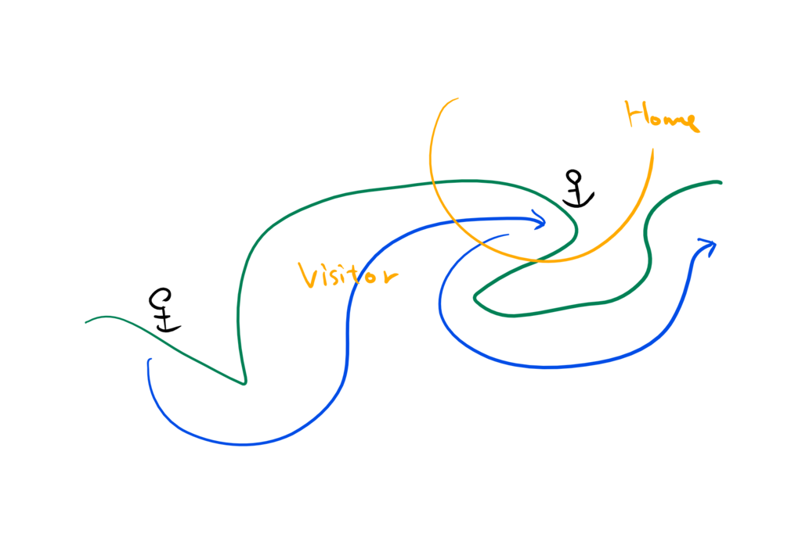
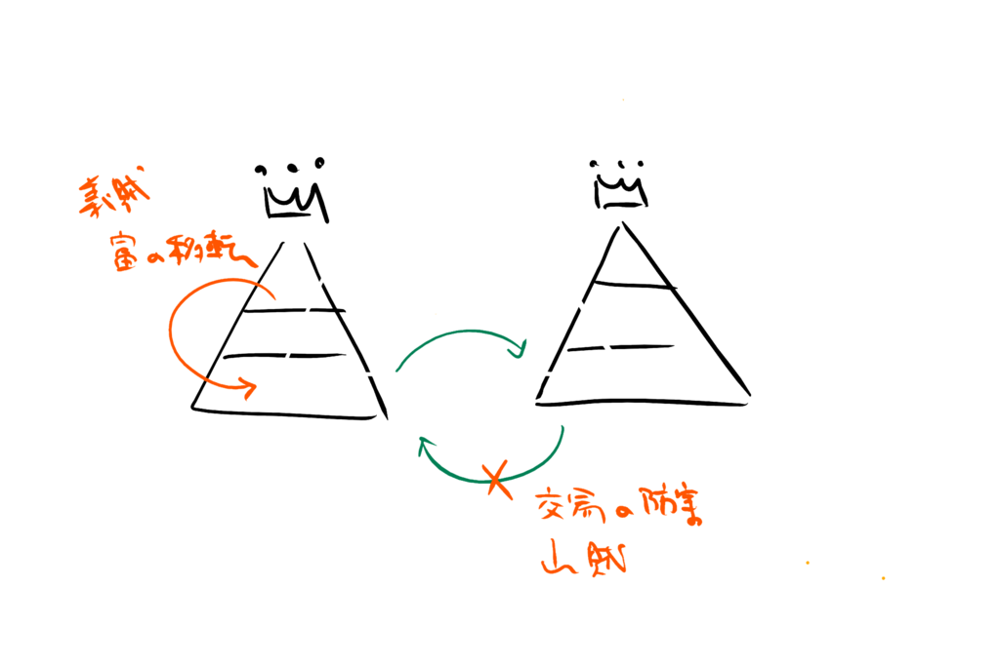
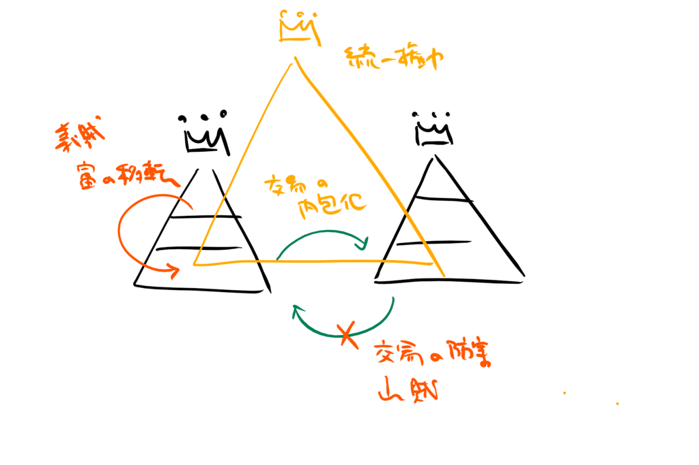

『海の武士団 水軍と海賊のあいだ』
公開日：
")
- 作者: 黒嶋敏
- 出版社/メーカー: 講談社
- 発売日: 2013/10/25
- メディア: Kindle版
- この商品を含むブログを見る
前回、海賊関連の本を読むなら『戦国最強の水軍 村上一族のすべて』が便利だよねーって紹介した気がするけど、こっちを先に読むべきだな！ とても面白かった。
一番よかったのは、かつての海のルールがおぼろげながらわかってきたことだね。
キーになるのは、「寄船」と呼ばれる慣習。
寄船（よりふね）とは、中世・近世の日本における遭難による漂流船・漂着船及びその搭載物のこと。これに対して漂流物一般を寄物（よりもの）と称した。更に漂流船を流船と呼んで、寄船を漂着船のみに限定する考え方もある。
日本では古代からそもそも船の遭難そのものを神罰として捉え、漂流船・漂着船は発見者・救出者によって略奪・捕獲の対象になると考えられてきた。慣習法では地元領主あるいは住民の所有物もしくは地域の共有物とされてきたが、しばしば権利を巡る争いを引き起こした。こうした争いを回避するために各種法令が出された他、寺社などに寄進して紛争防止と宗教的恩恵の両方を得ようとすることも行われ、博多に近い宗像大社は鎌倉時代の段階で過去数百年間の修理費用を寄船・寄物の寄進のみで賄ってきたという（寛喜3年4月5日官宣旨）。
要するに、「難破船（※ただし、本当に難破しているとは言っていない）は神さまのもの（という名目で、分け前をもらう）」ということだね。たぶん陸でも行き倒れのヒトはお寺が埋葬する代わりに、その所持品はお布施として自分の持ち物にしてしまうという風習があったと思うので、本来は別に海に限ったルールではないのだけど、これが“拡大解釈”されて、「荷物が濡れているから漂流物扱いな(＾ω＾)」「許可なく港に入ってきたんだけど、縄張りもわかんねー猿かよ。漂流物扱いってことにしとくわ(＾ω＾)」「ちょっと殴ったら死んじゃった＞＜ 漂流物ということにしておこう」みたいなことになっていたらしい（誇大表現を含む）。古代・中世の寺社仏閣は公共事業のようなこともやっていて（行基、空海、時宗の聖なんかの集金力のあるおっさんがお金と人手を集めて、公共的なインフラ整備を行う例を思い起こそう）、「寄船」はその――たとえば港湾整備とか――原資になったんだな。まぁ、海賊側もそれを大義名分に「寄船」をいただいて、分け前にあずかっていたんだけど。

そして、それらと微妙につながっているのだけど、海には「ローカル優先の法則」というべき慣習があった。ビジターは港湾インフラを整備しているローカル（地元）のいうことを聞かなければならない。そこから津料（港湾使用料）を徴収するルールなんかが派生していくのだけど、実際問題として、海は陸以上にローカル知識が必要とされる場所でもある。潮の満ち引きや海流、浅瀬の場所、そして海賊の出没スポット――そういった特殊知識へアクセスするためにも、津料のような陸で言う「関」のような仕組みが容認されたんだな。海の勢力の多くが分立しており、村上氏のように弱小世帯の寄り合いみたいな形態が主流になっていたのも、こうしたローカル知識の重要性がキーになっているのかも。

ここからは個人的な解釈になるけど、海には陸とは異なるルールが存在していたけれど、本質的には両者にそれほど大きな差異はないような気がする。陸においても、権力と権力のはざまには権力に属さない者たちがときに“商人”として、ときに“盗賊”（勝手に関を設けて通行料をせしめるのも含む）として活動していた。その意味で、“商人”と“盗賊”は割と表裏一体なんだね。これはギリシャ・ローマにおける商業の神メルクリウス（マーキュリー）が盗人の神様でもあったことでもわかる。地中海貿易で栄えたイタリア都市国家も、時に応じて商人と海賊の顔を使い分けていた。筆者が“海賊大名”や“水軍”という言葉を避けたがっていたのも、この二面性をちゃんととらえたかったからじゃないかな。

でも、地方権力の上に統一権力が構築されるようになると、盗賊の住処である“権力の隙間”が次第に埋められていく。商人と海賊、2つの顔をもっていた＜海の勢力＞は、海賊の顔を捨てざるを得なくなる。その結果、あるものは単なる海の専門家として権力の側に使役されるだけの存在になったり、あるものは武士という地位を捨て
商人として生きたりするようになった。
愛媛県では県民性を表すのに東予は「商売につぎ込み、倍に」
中予は「貯蓄して、利息を」
南予は「散財する」というが、東予には＜海の勢力＞のなかでも商人気質の濃い者が、中予には武士（官僚、役人）の血が残ったのかもしれない、などとも想像したりした（南予は……まぁ、南方気質なんだろうな！）。